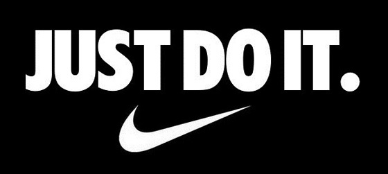

Nintendo Switch Lite ya a la venta: en qué se diferencia de la Nintendo Switch
La firma nipona explicó durante su presentación que esta Nintendo Switch Lite llega para ofrecer una propuesta diferente más centrada en la movilidad. Ahora bien, las diferencias entre la Nintendo Switch y la Nintendo Switch Lite van más allá.
A simple vista observamos variaciones en peso, dimensiones y la batería, pero como veremos más
adelante,
este formato orientado a la portabilidad presenta diferencias importantes en diseño, forma de juego
y
compatibilidad.
La nueva Nintendo Switch Lite se centra en su uso para movilidad, ofreciendo un dispositivo más
compacto y ligero con una pantalla cuya diagonal es ligeramente más pequeña que la Nintendo Switch
clásica: 5,5 por 6,2 pulgadas.
De hecho su uso se restringe al modo portátil, es decir, que no es posible conectarla a un televisor
para jugar en modo sofá. Por este motivo sus Joy-Con no son separables. Como consecuencia, la Switch
Lite es de una sola pieza.
Para seguir mejorando ese uso portátil cuenta con un diseño más ergonómico con el objetivo de
favorecer el agarre. Pero si prestamos atención a los mandos, también descubrimos diferencias: los
botones de dirección han sido reemplazados por una cruceta de control.
Asímismo, se ha eliminado la cámara infrarroja de movimiento y la vibración HD, dos medidas que
traen consecuencias en la compatibilidad con ciertos títulos, como veremos más adelante.
Finalmente también está el apartado de los colores: mientras que la Switch tradicional venía en gris
y rojo y azul neón, la Nintendo Switch Lite puede encontrarse en turquesa, gris, amarillo y en
edición especial Zacian y Zamazenta.
Dos modos de juego vs uno
Como hemos adelantado en el punto anterior, con la Switch Lite per se únicamente podremos jugar en
formato portátil. En el caso de la Switch normal podemos jugar en modo portátil y sobremesa,
alcanzando una resolución máxima de 1920x1080 a 60 fotogramas por segundo.
Esto se traduce en que darle la vuelta al juego en cuestión y buscar un 1. En el caso de la Switch
clásica no hay problema: valen todos, tanto los que llevan un 1 como los que llevan un 1 y un
2.
No obstante, hay razones de peso en forma de grandes éxitos como 'Super Mario Odyssey', 'Super Smash
Bros', The Legend of Zelda: Breath of the Wild, 'Mario Kart 8 Deluxe', entre otros, para elegir la
Switch Lite.
En todo caso, si queremos jugar a juegos que requieren controles de movimiento — de los que carece
la Switch Lite — simplemente tendremos que hacernos con un par de Joy - Con adicionales.


Leonel Castañeda
9 de septiembre, 2019
viva Nintendo ya quiero un switch lite